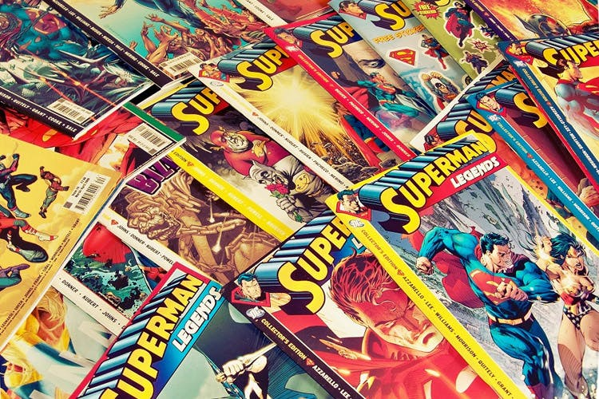

Books
Books are one of the most important sources of knowledge, imagination, and cultural preservation in human history. They allow people to learn new ideas, explore different perspectives, and understand the experiences of others across time and place. Through books, readers can travel to distant lands, study scientific discoveries, or dive into fictional worlds created by authors. Books play a vital role in education because they help develop language skills, critical thinking, and creativity. They also serve as tools for personal growth by offering guidance, motivation, and life lessons. Reading books regularly improves concentration, memory, and analytical abilities. In addition to academic value, books provide entertainment and relaxation, making them a popular pastime for people of all ages. Libraries and bookstores act as centers of knowledge where readers can access diverse information. Books also preserve history, culture, and traditions for future generations. With the rise of digital technology, books are now available in both printed and electronic formats, making reading more accessible than ever. Despite technological changes, the value of books remains unchanged because they continue to inspire innovation and understanding. They encourage curiosity, empathy, and lifelong learning. Books connect people across cultures and generations by sharing stories and knowledge. Ultimately, books are not just collections of pages but powerful tools that shape minds, influence societies, and enrich human life.
Fiction
Fiction refers to literature created from the imagination rather than based strictly on real events. These stories include invented characters, settings, and plots designed to entertain, inspire, or explore human emotions. Fiction often reflects real-life experiences through symbolic storytelling. Common fiction genres include fantasy, romance, mystery, thriller, science fiction, and historical fiction. Many famous novels like Harry Potter or The Hobbit fall into this category. Fiction allows readers to escape reality and experience different worlds, cultures, or time periods. Authors use creative narrative techniques such as dialogue, symbolism, and character development to build immersive stories. Fiction can also communicate moral lessons or social commentary through storytelling. It is one of the most popular literary forms because it stimulates imagination and emotional connection. Fiction books are widely read for entertainment, relaxation, and creative inspiration. Schools also use fiction to improve language skills and comprehension. Overall, fiction literature plays a vital role in shaping creativity and empathy in readers.
Non-Fiction
Non-fiction is literature based on real facts, real people, and actual events. Unlike fiction, it focuses on presenting truthful information, analysis, or documented experiences. This genre includes biographies, autobiographies, history books, self-help guides, travel writing, essays, journalism, and academic texts. Books such as Sapiens or Atomic Habits are well-known non-fiction works. Non-fiction aims to educate, inform, or provide practical knowledge rather than entertain through imagination. Writers rely on research, data, interviews, and factual evidence to support their content. Many non-fiction books help readers understand the world, improve skills, or learn from real experiences. This genre is important in education because textbooks and reference books fall under non-fiction. It also contributes to professional growth by offering career advice, technical knowledge, and real-life case studies. Non-fiction encourages critical thinking and awareness of social, political, and scientific issues. Overall, it serves as a foundation for knowledge, learning, and informed decision-making.
Comics

Comics are a form of visual storytelling that combines illustrations with text to narrate a story. They are usually arranged in panels with speech bubbles, captions, and expressive artwork. Comics can include humor, action, fantasy, or drama, making them appealing to readers of all ages. Famous publishers like Marvel Comics and DC Comics have popularized superhero comics worldwide. Comics rely heavily on visual expression, allowing readers to understand emotions and action scenes quickly. They are often shorter than novels but deliver strong storytelling through imagery. Comics also play a significant role in pop culture, inspiring movies, TV shows, and merchandise. Educational comics are used to simplify complex subjects using visuals. They are especially effective for younger readers because they combine reading with visual engagement. Comics can also explore serious themes like identity, justice, and society. Overall, comics are a powerful medium blending art and literature to create engaging narratives.
Japanese Mnaga

Manga refers to comics or graphic novels that originate from Japan and follow a distinctive artistic and storytelling style. They are usually printed in black and white and read from right to left. Manga covers a wide range of genres, including action, romance, horror, fantasy, sports, and slice-of-life stories. Popular series such as Naruto and One Piece have gained global recognition. Manga storytelling often focuses on character growth, emotional depth, and long-term plot development. It is published in serialized magazines before being released as volumes. Manga appeals to different age groups, with categories like Shonen (young boys), Shojo (young girls), Seinen (adults), and Josei (adult women). The art style often features expressive eyes, dynamic action scenes, and detailed backgrounds. Manga has influenced global entertainment, inspiring anime adaptations and games. It also reflects Japanese culture, traditions, and social values. Overall, manga is one of the most influential forms of modern graphic storytelling worldwide.
Korean Mnahwa
Manhwa refers to comics originating from Korea, known for their vibrant digital artwork and modern storytelling style. Unlike manga, manhwa is usually read from left to right and is often published in full color. Many modern manhwa are distributed as webtoons, designed for scrolling on smartphones. Popular series like Solo Leveling and Tower of God have gained global popularity. Manhwa stories frequently focus on fantasy, romance, action, and school life themes. The artwork tends to be more polished and digitally rendered compared to traditional manga. Webtoon platforms have made manhwa easily accessible worldwide. Manhwa often emphasizes dramatic storytelling, emotional character arcs, and cinematic visuals. It has also influenced Korean entertainment, inspiring dramas and animation. Because of its mobile-friendly format, manhwa is highly popular among younger readers. Overall, manhwa represents the modern digital evolution of comics.
Chinese Mnahua
Manhua refers to Chinese comics or illustrated stories, often featuring colorful artwork and themes inspired by Chinese culture and mythology. These comics may be published in print or digital formats and are read left to right. Many manhua stories focus on fantasy, martial arts, cultivation, and historical legends. Series like The King's Avatar and Heaven Official's Blessing are internationally recognized examples. Manhua artwork often uses bright colors and detailed costume designs influenced by traditional Chinese aesthetics. Stories frequently explore themes of honor, power, destiny, and personal growth. Manhua has become popular through online platforms and international translations. It blends traditional storytelling with modern digital art styles. Many manhua are adapted into animation, games, and novels. The genre also helps promote Chinese culture and folklore globally. Overall, manhua represents a rich fusion of art, tradition, and modern storytelling.